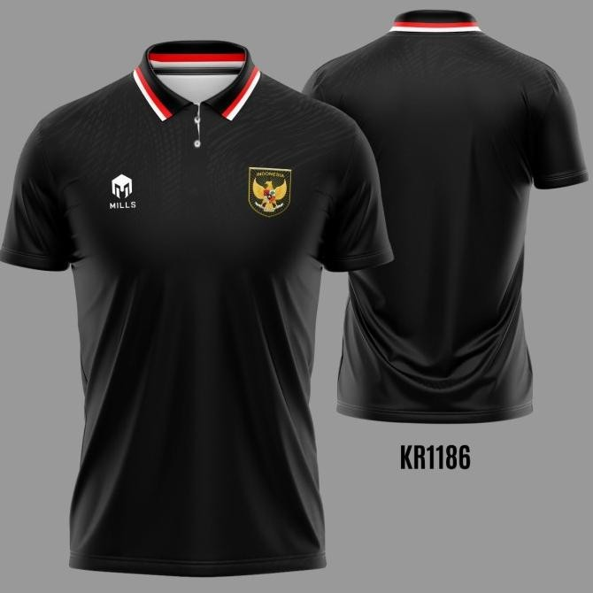

JERSEY TIMNAS INDONESIA
JERSEY HOME
Jersey home timnas Indonesia dengan warna merah yang memiliki arti pemberani serta didada terdapat lambang Garuda yang sangat kokoh dan memiliki makna yang meluas BHINEKA TUNGGAL IKA
JERSEY AWAY
Jersey away timnas Indonesia dengan warna putih elegan memiliki arti Suci, selain itu terdapat warna hijau yang juga terdapat memiliki arti kesegaran, kesuburan, kedamaian, dan keseimbangan.
JERSEY THIRD
Jersey third timnas Indonesia dengan warna hitam dengan corak bahari ombak maritim yang identik dengan Indonesia Negara Maritim Kepulauan. Dan didesain dengan sporty casual agar cocok diluar lapangan